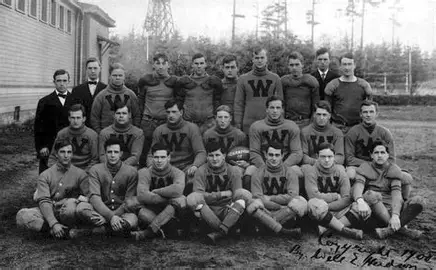
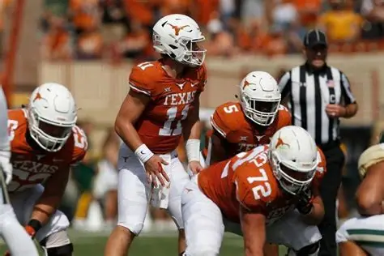

Although the NFL is more prominent today, college football has a rich history that dates back to long before the NFL was even a thought. The first ever college game was played between Rutgers University and Princeton University in 1869. Since that game, the game of college football has evolved drastically. Early in the game's lifetime, football was played very similarly to rugby, with the majority of teams primarily running the football. Forward passes were rare until around the 1980s when notable universities such as Brigham Young University (BYU) and the University of Southern California (USC) developed "air raid" styles of play which heavily utilized the forward pass. Now in the modern era, there are over 130 different universities that have their own college football teams, all with their own style of play. For example, each of the military academies like Army, Navy, and Air Force each have their own unique style of play called the "triple option" which involves a heavy influence on running the ball using creative misdirection. With so many teams in college football, all 130+ teams are divided into what is known as conferences based on geographical location. Teams in conferences like the Southeastern Conference (SEC) and the Atlantic Coast Conference (ACC) compete among the other teams in their conference for the opportunity to win a conference title at the end of the year. After conference championships, the best teams from each conference compete with each other in what are called Bowl Games. Winning famous bowls like the Rose Bowl and the Holiday Bowl are some of the greatest accomplishments a college football team can acheive.
Although very similar, college football and the NFL have a few key differences, most of which are slight differences in the rules of the game. For example in college football, if a player's knee hits the ground then that player is ruled "down" and the play ends. In the NFL, a player is only ruled down if their knee is down and they have also been touched by the opposing team. This opens up opportunities in the NFL for players catching the ball on the ground, and then getting up and running for extra yards. Another key difference is in what is ruled a "catch." In college football, a catch is ruled a catch as long as you have posession of the ball with at least one foot down in the field of play. In the NFL, you need to have both feet down for it to be ruled a catch. For this reason, there are more opportunities in college football for sideline catches close to the out of bounds line.
